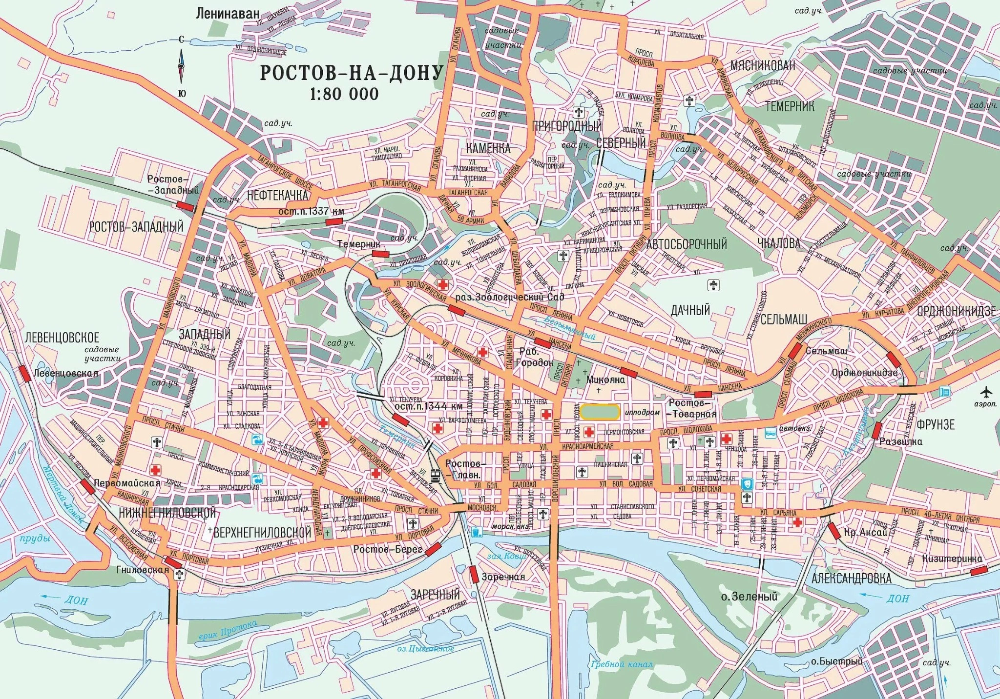

АРХИВ ЗЕМЕЛЬ ТЕНЕЙ / 01
Ночной Ростов
Знакомые улицы. Иной взгляд.

ИГРОВАЯ КАРТА · МЕТКИ ОРИЕНТИРОВОЧНЫЕПерсонажи
Здесь появятся досье новой группы.
НОВАЯ ГРУППА
Персонажи ещё не представлены
Их истории появятся здесь, когда начнётся игра.
Хроника
Здесь появятся события сыгранных сессий.
ПЕРВАЯ ЗАПИСЬ
История ещё не записана
После игры здесь появится краткая хроника без секретов мастера.
Известные места
Места на карте города. Их роль в истории ещё предстоит узнать.